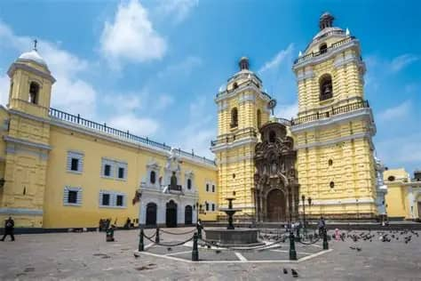
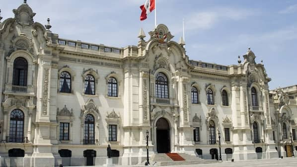
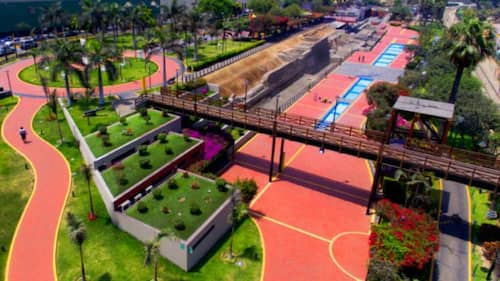

Current Weather
Landmarks to Visit

Plaza Mayor
The heart of Lima's historic center, surrounded by important buildings like the Government Palace and the Cathedral.

Cathedral of Lima
A masterpiece of colonial architecture, built in the 16th century and still standing tall in the Plaza Mayor.

Monastery of San Francisco
Famous for its baroque architecture and catacombs, this monastery is one of Lima’s most iconic religious sites.

Government Palace
The official residence of the President of Peru, located on the north side of Plaza Mayor.

Museum of the Inquisition
Offers a fascinating look into Peru's colonial history and the Spanish Inquisition period.

Parque de la Muralla
A historical park featuring remains of Lima's old city walls and scenic views of the Rímac River.